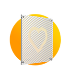
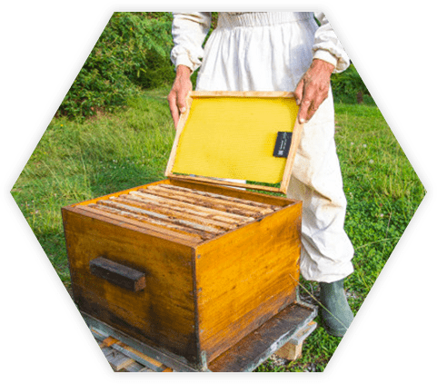

Modèles économiques des entreprises
Immoblade
Étude par Nolan Jacquemont
Modèle économique
Immoblade propose deux types de protection solaire :
Pour voir comment fonctionnent les solutions imaginées et proposées par Immoblade, cliquez ici.
Elle propose également des services d’analyses de flux solaires et d’études thermiques approfondies, afin de déterminer les besoins et les améliorations en termes de confort pour des bâtiments, et également de proposer les solutions et produits les plus adaptés.
Les principales dépenses d’Immoblade sont évidemment la production de ses solutions ainsi que, et surtout, la recherche et le développement de nouvelles solutions moins coûteuses et plus efficaces.
Les principales recettes d’Immoblade sont la vente de ses produits de protection solaire, et également la vente des services d’études de flux solaires et d’études thermiques approfondies.
Modèle économique
Ils proposent un pot de fleurs à compostage qui est un pot de fleurs relié à un composteur qui fonctionne avec des vers à compost. Son objectif est de transformer les déchets végétaux en compost. L’ensemble des produits de les transfarmers sont fabriqués localement, les pièces du pot de fleurs sont les suivants : Paroi en plastique régénéré Vers Pot en terre cuite Coupelle
Les principales dépenses de Les Transfarmers sont la production de ses solutions, et la recherche et le développement de nouveaux produits. Ses recettes sont la vente de ses produits de compostage ainsi que le financement.
Ils font de la production en propre et fabriquent l’ensemble des produits en France afin de garder le contrôle de leurs caractéristiques et veiller sur leurs qualité.
Les Transfarmers
Étude par James Sandall Robertson
BeeGuard
Étude par Cédric Pascal
Modèle économique
Beeguard propose plusieurs produits :
Les dépenses de BeeGuard sont principalement dans la recherche et le développement de nouveaux produits afin de les améliorer et de toujours proposer des prix attractifs et dans la production, maison, de ses produits.
Les principales recettes de BeeGuard proviennent de l’achat, de la location et de l’installation de ses produits par des particuliers ou professionnels.
Beeguard adopte comme modèle économique basé sur l’innovation permanente, en effet rien que le concepte de ruche connectée est en soit une innovation car ils sont précurseurs dans ce domaine et de plus ils ont divers accessoires optionnels a ajouter a la ruche si on veut la localiser via un tracker gps, ou autre.
Comparaison des modèles économiques
Comme vous pouvez le voir, les modèles économiques de ces trois organisations sont très proches. Chacune vend des produits nouveaux et innovants, et investit dans la recherche et le développement. Cependant, Immoblade propose également des services annexes à ses produits, ce que ne font pas Les Transfarmers et Beeguard.
De son côté, Beeguard est le seul à vendre différents produits et outils, notamment sous forme de produits optionnels, là où Immoblade vend deux gammes différentes d’un même produit et Les Transfarmers ne vend actuellement qu’un seul et unique produit.